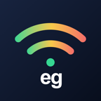
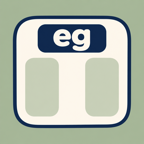
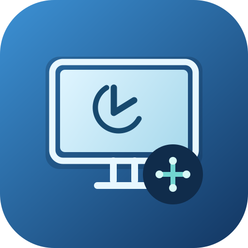

egcamera
選んだ LUT の色を撮影前に確認できる、写真専用の iPhone カメラです。LUT を適用した HEIC と、設定に応じて編集用の ProRAW DNG を保存します。
Apps by egyo
写真の色をつくる、旅のしおりを読む、Mac で作業を始める準備をする。そんな日々の用事に合わせて開発している、iPhone・iPad・Mac 向けのアプリを紹介します。
選んだ LUT の色を撮影前に確認できる、写真専用の iPhone カメラです。LUT を適用した HEIC と、設定に応じて編集用の ProRAW DNG を保存します。
RAW 写真から、色をつくる。色と階調を調整し、好みの仕上がりを Display P3 の 3D LUT（.cube）として持ち出す iPhone アプリ。

開発中・非公開新幹線などで移動している間の通信の変化を、ping の応答時間（ms）で確認する iPhone アプリです。ロック画面の Live Activity と、対応機種の Dynamic Island に色分けして表示します。

開発中・非公開朝と夜の体重を分けて、変化をやさしく振り返る体重日記。ヘルスケアの記録と期間に応じた平均を眺め、歩数・メダル・ひとことメモも確認できます。プロトタイプを試用中です。
好きなステージの時間を、逃さずに。スプラトゥーン3の時間帯・ルール・マッチ・ステージを選び、好みに合う予定を開始前や指定時刻にお知らせする iPhone アプリ。
好きな写真を、自分のペースで。Tumblrの画像・無音動画を全画面で眺める個人用ビューア。iPhone・iPadの4方向表示、Duo／iPadのデュアル表示、サムネイルバー、Photoset、GIF、スライドショー、画像保存、ライクとキューへのリブログを備え、英語・日本語に対応しています。TestFlightでテスト中で、一般配布・試用募集は行っていません。
旅のしおりを、気持ちよく読み進める。旅行のしおりやパンフレットを1ページ・2ページで眺め、ページ一覧と履歴から続きへ戻れる、iPad 専用の PDF リーダー。
好きな曲を、30秒ずつ。YouTube の各曲の1:00〜1:30を映像付きでつなぎ、順番・シャッフル・リピートで楽しむ Mac アプリ。
いつもの Finder を、上下ひと組に。実際のウィンドウ2枚を同じ幅・高さに揃え、移動・リサイズ・最小化・復元・閉じる操作を連動させる Mac アプリ。
一定時間使っていない Mac の全ディスプレイを黒く覆う、メニューバー常駐のシンプルなアプリ。

開発中・非公開ログイン後の共有への再接続・アプリの起動・フォルダの表示と、作業終了時のアプリの終了・共有の解除・ディスプレイスリープをまとめて実行するメニューバーアプリです。
描きたいイメージを、伝わる言葉へ。創作内容・参考資料・完成サイズを整理し、ChatGPT に貼り付ける日本語プロンプトを作成・コピーする Mac アプリ。
アプリについてのご意見やお問い合わせは X のアカウントへお願いします。